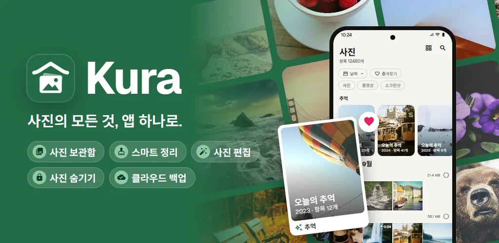
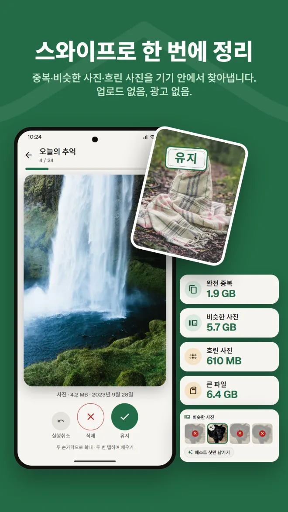
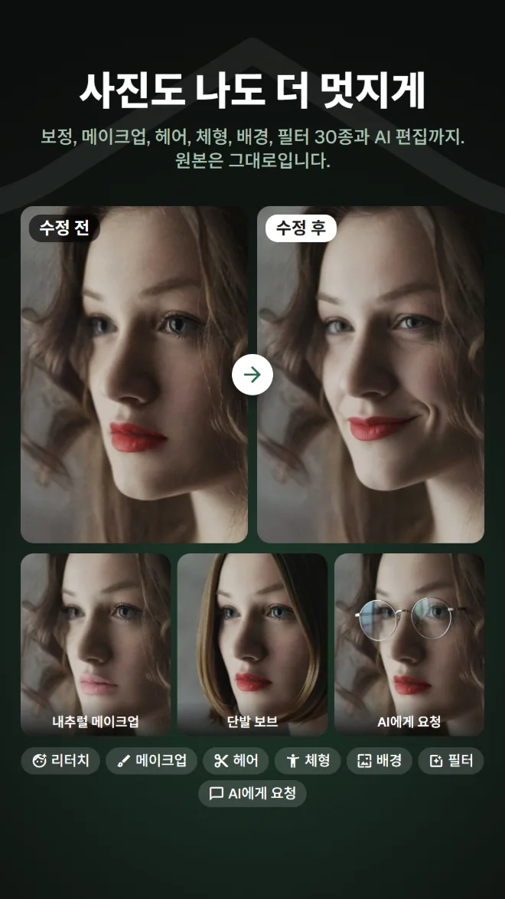
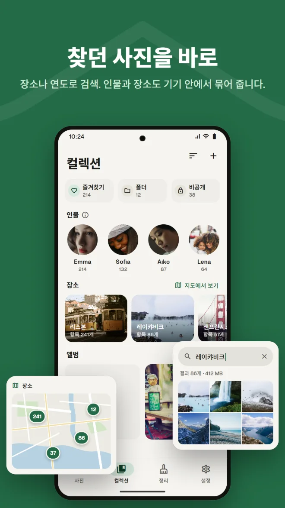
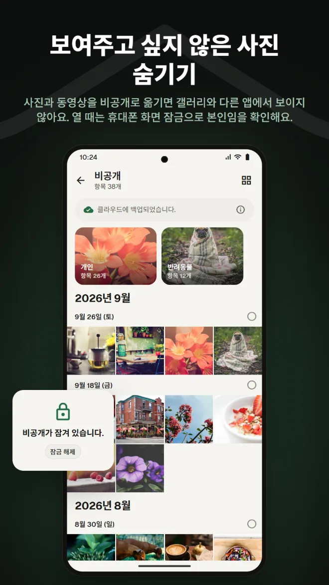
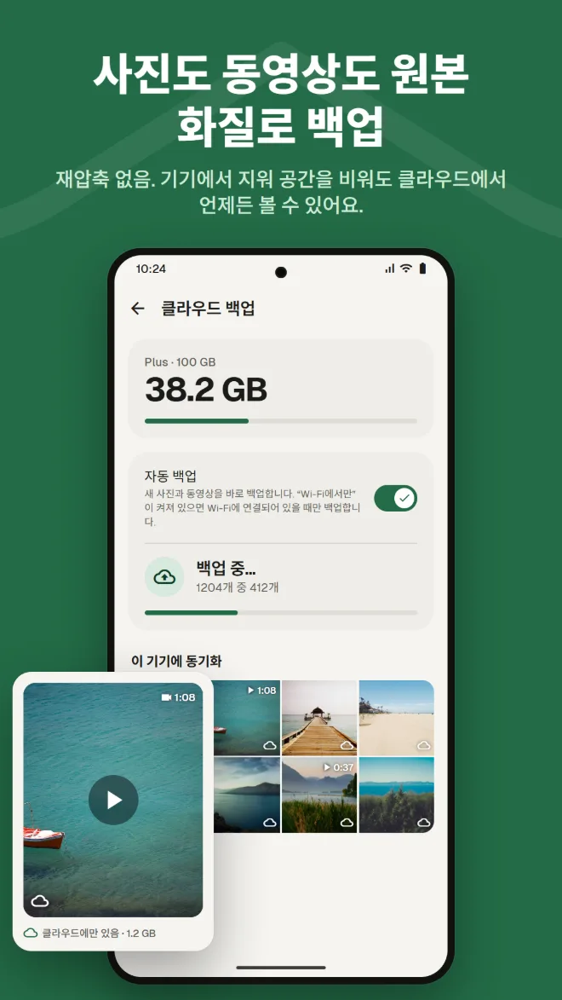
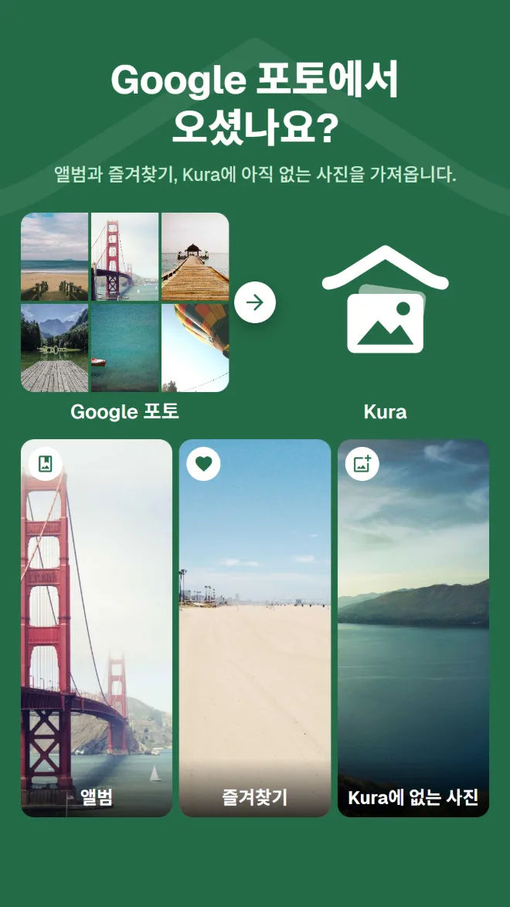

내용으로 검색
장소, 사진 속 내용, 사진 속 글자로 사진을 찾습니다.
갤러리, 정리, AI 편집, 비공개, 백업, Google 포토에서 옮기기까지. Kura 하나면 용도마다 다른 앱을 쓸 필요가 없습니다.
Android 11 이상 · 둘러보기, 정리, 삭제 무료 · Google 계정으로 로그인

보는 건 갤러리, 공간 확보는 정리 앱, 편집은 또 다른 앱, 백업은 또 다른 서비스. 앱을 오갈 때마다 같은 사진을 다시 찾고 있지 않나요?
Kura는 이 모든 것을 하나의 라이브러리에서 해냅니다.
같은 사진을 같은 곳에서 보고, 정리하고, 편집하고, 백업하세요.
라이브러리부터 정리, 편집, 옮기기, 백업까지 한 번에 확인하세요.
Kura가 기기 안에서 완전 중복, 비슷한 사진, 흐린 사진, 큰 파일을 찾아냅니다. 오른쪽으로 스와이프하면 유지, 왼쪽은 삭제. 확보할 수 있는 공간도 바로 확인할 수 있습니다.

보정, 윤곽, 메이크업, 헤어, 배경에 필터 30종, 조정, 자르기까지. 음식을 맛있어 보이게 하는 필터와 전신 비율을 다듬는 바디 편집도 있습니다. 항상 사본으로 저장되어 원본은 그대로입니다.

날짜별 그리드와 지난해 같은 날의 추억. 장소, 사진 속 내용, 사진 속 글자로 검색할 수 있고, 얼굴은 기기 안에서 인물별로 묶어 줍니다.

사진과 동영상을 비공개로 옮기면 갤러리와 다른 앱에서 보이지 않습니다. 열 때는 휴대폰 화면 잠금으로 본인임을 확인합니다.

사진과 동영상을 재압축 없이 백업합니다. 백업된 사본은 휴대폰에서 지워 공간을 확보해도 클라우드에서 계속 볼 수 있습니다.

Google Takeout의 .zip 파일을 앱이나 웹 앱에서 보내기만 하면 됩니다. 앨범과 즐겨찾기, Kura에 아직 없는 사진을 가져옵니다. 압축 해제는 Kura 서버가 백그라운드에서 처리하므로 앱도 브라우저도 닫아도 됩니다.

Kura 클라우드의 사진은 웹 앱에서도 앱과 똑같이 보고, 정리하고, 불필요한 사진을 지우고, 편집하고, 공유하고, 업로드할 수 있습니다. 즐겨찾기는 앱과 동기화됩니다.
웹 앱 열기Google 계정으로 로그인 · 영어와 일본어만 지원
매일 쓰는 갤러리에 기대하는 기능은 다 갖췄습니다.
장소, 사진 속 내용, 사진 속 글자로 사진을 찾습니다.
얼굴은 기기 안에서 인물별로 묶고, 사진은 지도에서 볼 수 있습니다.
지난해 같은 날 찍은 사진이 라이브러리 맨 위에 나타납니다.
밝기와 색상 조정, 자르기, 브러시, 그리고 음식 필터까지.
만료일과 비밀번호를 설정해 앱이 없는 사람에게도 보낼 수 있습니다.
열 때마다 화면 잠금으로 확인합니다. 비공개를 숨겨 둘 수도 있습니다.
설치하면 내 사진이 정리된 상태로 바로 나타납니다.
Google Play에서 받기 (Android 11 이상)
'모두 허용'을 선택해 라이브러리 전체 불러오기
Google 계정으로 로그인
정리는 바로, 백업은 필요할 때 추가
광고는 없습니다. 클라우드를 쓸 때만 비용이 듭니다.
기기 안에서 할 수 있는 모든 것
Google Play에서 월 결제, 언제든 해지 가능
가격은 Google Play에서 현지 통화로 표시됩니다.
사진이 기기 밖으로 나가는 것은 보낼 곳이 분명한 작업을 직접 했을 때뿐입니다.
중복, 흐림, 얼굴, 사물, 글자 인식은 기기에서 실행됩니다. 정리를 위해 사진을 업로드하지 않습니다.
파일을 지우기 전에는 항상 Android가 확인하며, 삭제한 사진은 휴지통을 비울 때까지 남아 있습니다.
로그인하면 서버에는 Google 계정의 ID만 저장됩니다. 이름과 이메일 주소는 보내지 않습니다.
AI 편집은 얼굴 주변 영역만 보내며, 사진도 결과도 서버에 남기지 않습니다.
광고 없음 · 둘러보기, 정리, 삭제 무료